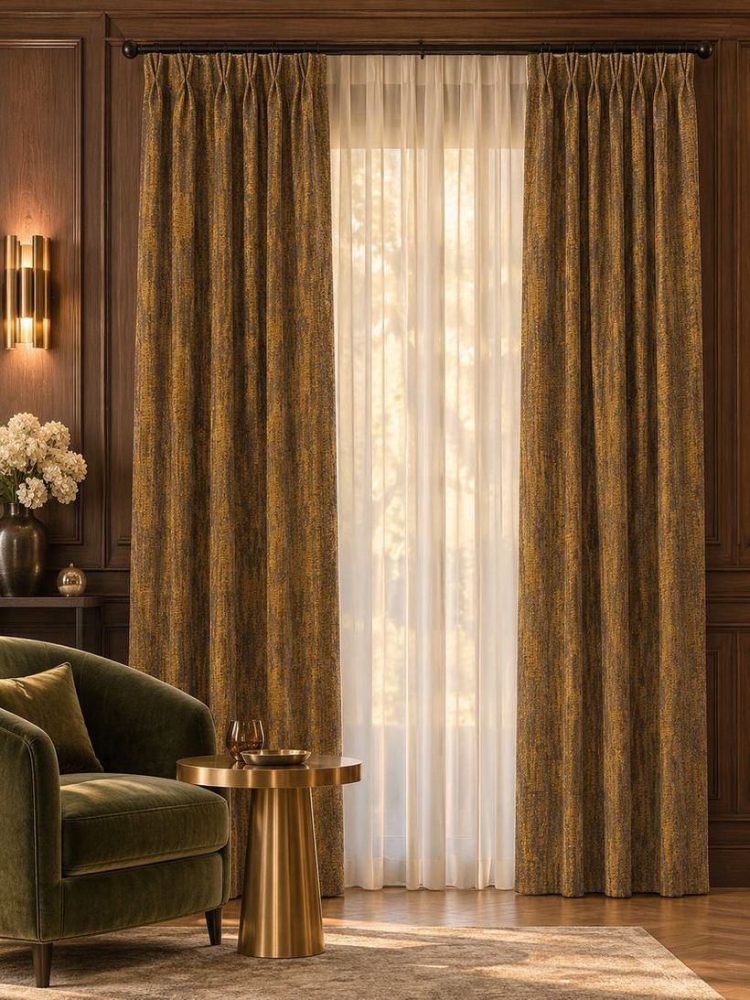

Nothing here is automated.
A person reads your measurement, a person lays the cloth out and cuts it, a person forms each pleat and presses it. That is slower than a factory and it is the reason a hem hangs straight. This page is what actually happens between your email and your window.
Reading the window
We work from your track length and drop, not from the window opening. If the figures look wrong for the photograph, we ask before we cut — that one question saves most of the mistakes.
Choosing the cloth
We post samples. You look at them at ten in the morning and again at six in the evening, because they will not be the same colour.
Cutting
Cloth is 290–340 cm wide, so nearly every window is cut from a single width. No seam across the face unless the window is genuinely enormous.
Heading and hem
Pleats formed and stitched by hand, weighted hem, pressed, then measured again against your original figures before it is boxed.
How much cloth goes across the window.
Fullness is the ratio of cloth to track. At 2.0× a 100-inch track takes 200 inches of fabric. Under about 1.5× a curtain looks thin when it is closed, however good the cloth is — it is the single most common reason a made-to-measure pair disappoints.
The figures below are what we use unless you tell us otherwise.

The top of the curtain decides how the whole thing reads.
| Heading | Fullness | What it does |
|---|---|---|
| Double pinch pleat | 2.0× | Two folds per pleat. The everyday choice — tidy, not fussy. |
| Triple pinch pleat | 2.5× | Three folds. More cloth, deeper shadow, a dressier window. |
| Inverted box pleat | 2.0× | The fold turned to the back. Flat face, architectural. |
| Ripple fold | 2.0× | A continuous S-wave on a track. Modern, very even. |
| Grommet / eyelet | 1.8× | Rings through the cloth, straight onto the pole. |
| Rod pocket | 2.0× | A sewn channel. The pole disappears into the curtain. |
| Tab top | 1.8× | Loops over the pole. Casual, and the cheapest to make. |
| Flat panel | 1.0× | No gather at all. For a sheer meant to read as a plane. |
Curtainia Ltd was incorporated in May 2026.
So we are not going to tell you we have been doing this for thirty years. The bench behind Curtainia is not new, but the company is, and you can check the registration yourself: England and Wales, number 17203286. Everything else on this site — the widths, the weights, the fullness ratios — is the real figure or it says on request.